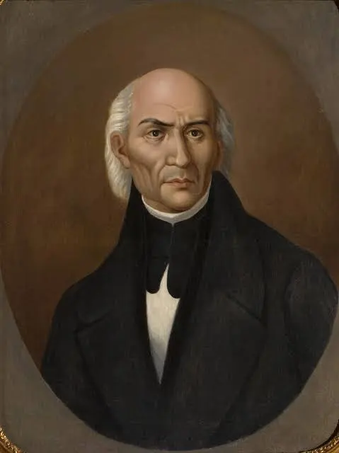
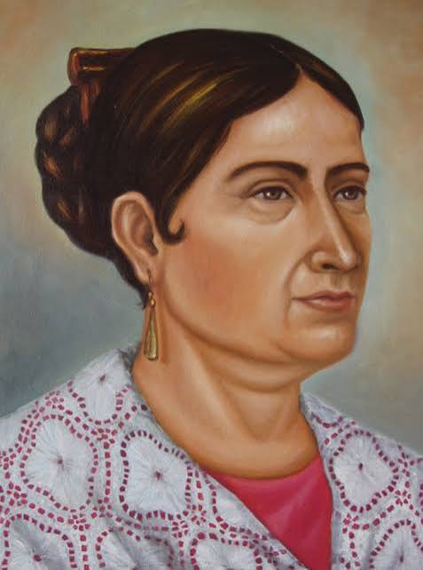
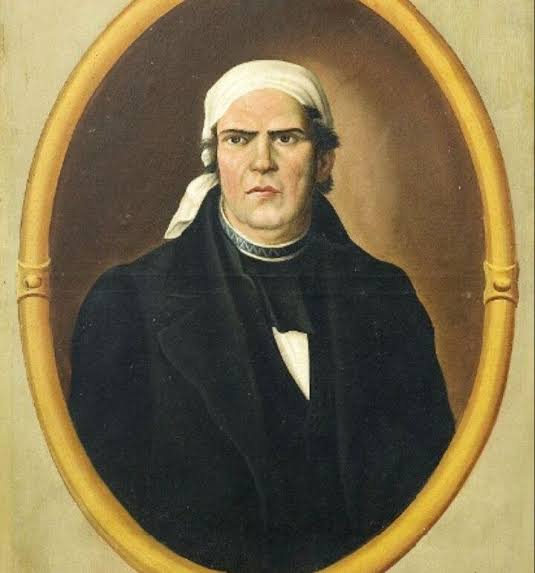
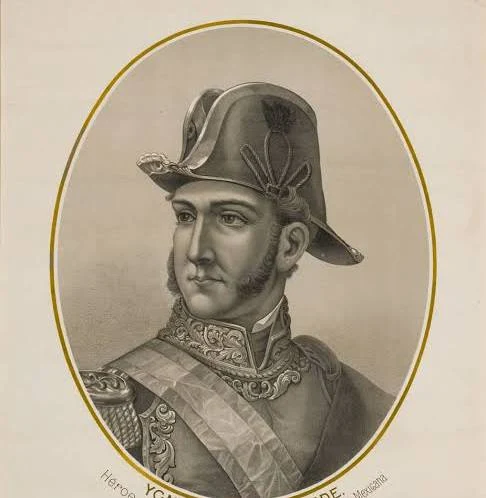

Fechas Importantes (Línea de Tiempo)
BATALLA DE CHAPULTEPEC
13 DE SEPTIEMBRE DE 1847
Defensa del Castillo de Chapultepec por los Niños Héroes y el ejército mexicano frente al avance de las tropas estadounidenses.
EL GRITO DE DOLORES
15 DE SEPTIEMBRE DE 1810
Conmemoración de la madrugada en que Miguel Hidalgo llamó a la población a levantarse en armas contra el dominio español.
INICIO DE LA INDEPENDENCIA
16 DE SEPTIEMBRE DE 1810
Fecha oficial en que arranca el movimiento insurgente y la lucha armada por la libertad de México.
CONSUMACIÓN DE LA INDEPENDENCIA
27 DE SEPTIEMBRE DE 1821
Entrada triunfal del Ejército Trigarante a la Ciudad de México, dando fin a 11 años de lucha armada y consolidando la independencia.
Personajes Ilustres

Miguel Hidalgo y Costilla
Padre de la Patria e iniciador del movimiento.

Josefa Ortiz de Domínguez
La Corregidora, clave en avisar de la conspiración.

José María Morelos y Pavón
Autor de "Sentimientos de la Nación".

Ignacio Allende
Capitán militar del movimiento insurgente.
Datos Curiosos y Mitos
EL MITO DEL PÍPILA
Según la versión popular, Juan José de los Reyes "El Pípila" se colocó una losa de piedra en la espalda para quemar la puerta de la Alhóndiga de Granaditas. Historiadores señalan que representa el esfuerzo colectivo de los mineros de Guanajuato más que la hazaña de un solo hombre.
LA CAMPANA DE DOLORES
La historia tradicional cuenta que el cura Miguel Hidalgo tocó la campana de la parroquia a la medianoche del 15 de septiembre. La realidad histórica indica que el llamado ocurrió entre las 5:00 y las 6:00 de la mañana del 16 de septiembre de 1810, utilizando el campanario para convocar a los feligreses a la misa dominical antes de iniciar el levantamiento.